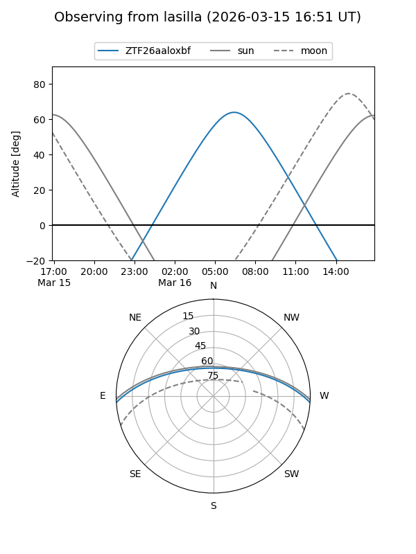
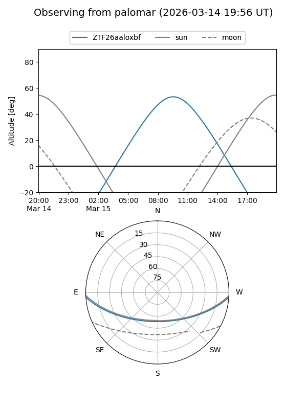

ZTF26aaloxbf
Target ZTF26aaloxbf at 2026-03-15 11:55
Aliases and brokers:
FINK: link
Lasair: link
ALeRCE: link
alt names
ZTF26aaloxbf (ztf,fink_ztf)
Coordinates:
equatorial (ra, dec) = 199.0565,-3.13635
equatorial (HMS+DMS) = 13:16:13.56,-03:08:10.87
galactic (l, b) = (315.0657,+59.15017)
Flags:
Photometry:
last ztfg=19.36
1 ztfg detections
Lightcurve
Visibility


Additional plots